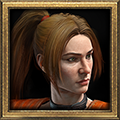
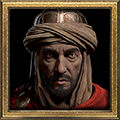
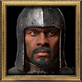
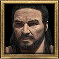

Hire mercenaries in Acts I, II, III and V. They can now equip an amulet, two rings, a belt, gloves and boots.

Rogue
Act I · Kashya, the Rogue Encampment
Bows
Every variant: Inner Sight

Desert Mercenary
Act II · Greiz, Lut Gholein
Polearms and spears
Every variant: Jab
- Prayer
- Defiance
- Blessed Aim
- ThornsNightmare and Hell only
- Holy FreezeNightmare and Hell only
- MightNightmare and Hell only

Iron Wolf
Act III · Asheara, Kurast Docks
Swords and shields

Barbarian
Act V · Qual-Kehk, Harrogath
Swords: a pair of one-handed blades, or one sword of any size
A variant sets a mercenary's skills and, for the Desert Mercenary, its aura. Plan a mercenary.
Gearing overhaul
Aura-bearing uniques such as The Canticle also work on mercenaries.